| 1972 뮌헨 | 1976 인스부르크 | 1976 몬트리올 | 1980 레이크 플래시드 |
| 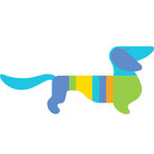 | 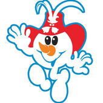 | 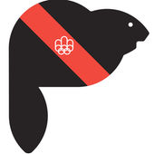 | 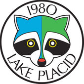 |
| 발디 | 슈네만 | 아믹 | 로니 |
| 1980 모스크바 | 1984 사라예보 | 1984 로스앤젤레스 | 1988 캘거리 |
| 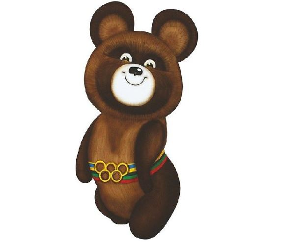 | 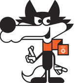 | 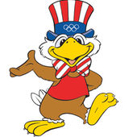 | |
| 미샤 | 부코 | 샘 | 하이디&하우디 |
| 1988 서울 | 1992 알베르빌 | 1992 바르셀로나 | 1994 릴레함메르 |
| 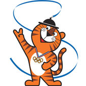 | 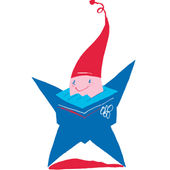 | |
|
| 호돌이 | 마지크 | 코비 | 하콘&크리스틴 |
| 1996 애틀랜타 | 1998 나가노 | 2000 시드니 | 2002 솔트레이크시티 |
| 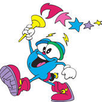 | |
|
|
| 이지 | 스키, 노키, 레키, 츠키 | 시드, 올리, 밀리 | 파우더, 콜, 코퍼 |
| 2004 아테네 | 2006 토리노 | 2008 베이징 | 2010 밴쿠버 |
| |
|
|
|
| 포보스, 아테나 | 네베, 글리즈 | 베이베이, 징징, 환환, 잉잉, 니니 | 콰치, 미가 |
| 2012 런던 | 2014 소치 | 2016 리우데자네이루 | 2018 평창 |
| 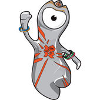 | |
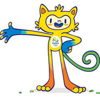 | 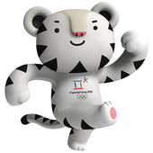 |
| 웬록 | 토끼, 북극곰, 눈표범 | 비니시우스 | 수호랑 |